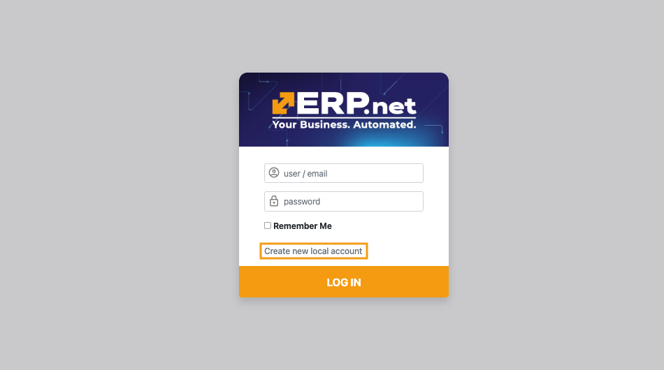

How to add new users and manage permissions (v.26)
This is a step-by-step guide on defining a new user and configuring their access to a Client Center (CC) in ERP.net version 26.
For details on how to define a user of a Client Center in ERP.net version 24, please see this guide.
Note
If you haven't created a CC website already, please read Set up a Client Center.
To learn how to apply global platform settings, please read Apply platform settings.
Local account creation
Before a user can get access to a Client Center through external access role assignment, they must first create a local account.
Accessing the CC log-in page allows them to access the local account creation form.

Required fields are Е-mail, Full Name, and Password.

Adding local user account in CC
Once a user has created their local account, another user with an external access role Admin or Owner in а Client Center can add them there through the User Management page. The Admin and Owner roles provide full reach of all customer data, including the ability to add, remove, and manage users for that customer.
Omission of this step will result in a critical lack-of-access error message for the new user when attempting to log in.
Note
By default, the ERP.net Administrator gets the Owner role in the Client Center they create, which allows them to assign any role to any external or internal user of their choice. A user with the Admin role can in turn can start adding other users with varying levels of access into that same Client Center through the User Management page.
Step-by-step process
If using multiple customers, make sure you are logged into the customer whose data you wish to share with the user.
Navigate to the User Management page and click Add User.
This will trigger a window where you need to provide the user's exact email address.

Proceed to fill out the Days Back Access field. This is the maximum number of days the user is allowed to view data in the past.

Finally, choose the external access role the user will be assigned.
Users granted an external access role Admin or Owner are capable of adding other users to the CC environment(s) they are a part of.

The new user can now log in with their credentials and immediately start using the Client Center.

Tip
To expand a user's access to more of your customers, switch to another customer and repeat all steps described above.
Warning
If any of the configuration settings are not properly applied, a respective error message will be shown.
Note
The screenshots taken for this article are from v26 of the platform.